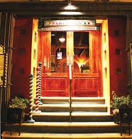
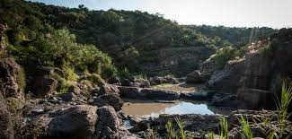
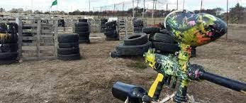
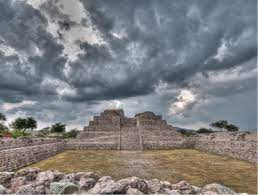
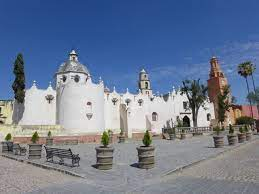
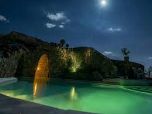
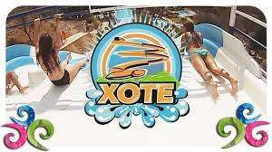

Lugares que son los mejores que podrias visitar mientras estas en San Miguel Allende.
Plaza La LuciernagaLa plaza esta ubicada a lado del libramiento Jose Manuel Zavala Zavala, es muy hermosa, hay mucha variedad de cosas, entretenimiento y muchas cosas mas. |

Restaurante Italiano Francesco'sEl mejor restaurante itiliano que deberias ir a conocer, por su variedad de platillos, ensaladas y bebidas, se encuentra en la parte baja del centro de la ciudad. |

Charco del IngenioEl Charco del Ingenio es un Jardín Botánico y una Reserva Natural extraordinaria. Posee una extensa colección de cactáceas y otras plantas suculentas de México, muchas de ellas raras, amenazadas o en peligro de extinción |

GOTCHA campo de tiroJugar gotcha es una actividad para aniversarios, eventos de empresa y team building |

Cañada de la virgenLa construcción de estas pirámides y otras estructuras arquitectónicas a lo largo de la cuenca central del río Laja es atribuida a grupos tolteca-chichimecas. La Cañada de la Virgen formó parte de una organización social mayor que estaba vinculada con el sistema político de los Toltecas |

Santuario de AtotonilcoUbicado el corazón de Atotonilco, Guanajuato, apenas a 8 km. de San Miguel de Allende, se levantan imponentes los muros de una Iglesia del Siglo XVIII, santuario vivo, en tanto que su uso religioso continúa vigente. |

Balneario Mayan BathsDescubre estas exclusivas Albercas subterráneas, termales , naturales y minerales, Vive esta experiencia a través de túneles de piedra, cuarzo y cristal iluminados con más de 100 velas. Contempla hermosos atardeceres desde sus piscinas y jardines exteriores. |

Parque Acuatico XoteTe invitamos a conocer nuestras albercas, áreas verdes, toboganes, juegos acuáticos para niños y el temazcal. |
Autor: Palma Aboytes Brayan 4BP